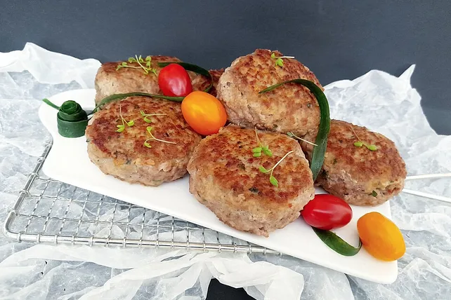

Buletten aus Rinderhackfleisch
Startseite

Ein Lckeres und Schnelles Gericht, für den noch schneller kommenden Hunger :D
Die angegebenen Mengen sollten für ca. 4 Portionen ausreichen (Zubereitungszeit ca. 20 min.)
- 500g Rinderhackfleisch
- 100g Kräuterfrischkäse
- 1 Ei
- 1 große Zwiebel
- Salz und Pfeffer
- Hackfleisch in eine Schüssel geben, Kräuterfrischkäse, Ei, Salz und Pfeffer dazugeben und alles gut vermengen.
- Die große Zwiebel in einer Pfanne mit Öl goldbraun dünsten und zu dem Hackfleisch geben.
- Die gewünschte Größe der Buletten mit den Händen formen und im heißen Fett bei mittlerer Hitze gut durchbraten.
- Die Buletten werden durch den Frischkäse schön locker, so dass keine aufgeweichte Semmel dazu muss.